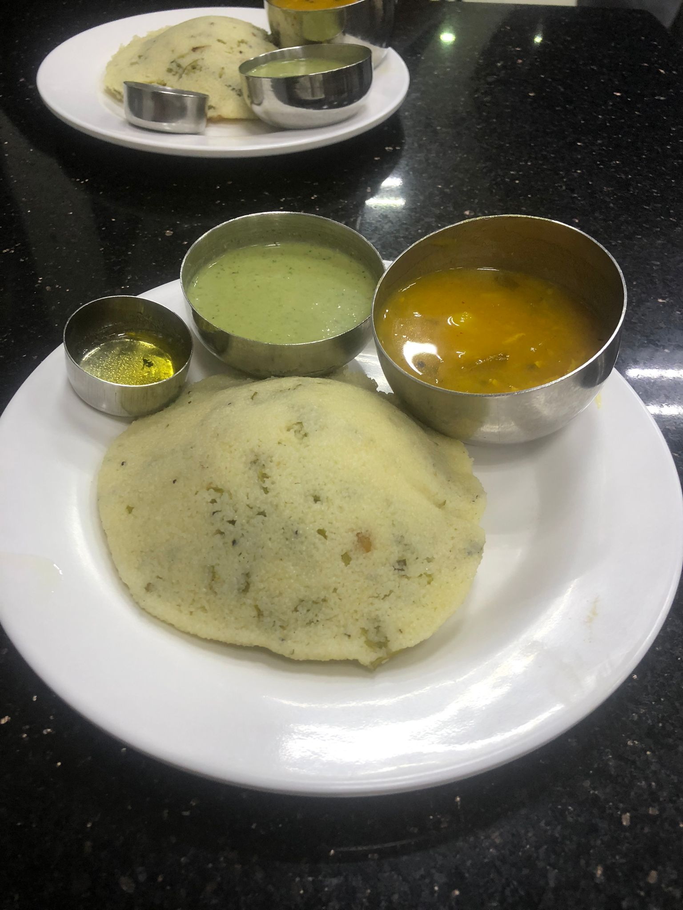

Rava Idli

Main Ingredients
- For the Idli Batter:
- Rava (semolina / suji) : 1 cup
- Yogurt (curd) : 1 cup (slightly sour preferred)
- Water : as needed to make thick batter
- Eno fruit salt or baking soda : ½ tsp
- Salt : to taste
- For Tempering (Tadka):
- Oil or ghee : 1 tbsp
- Mustard seeds : ½ tsp
- Urad dal : 1 tsp
- Chana dal : 1 tsp
- Cashews : 8 to 10 (optional)
- Green chilies : 1 or 2 (finely chopped)
- Ginger : 1 tsp (grated)
- Curry leaves : 6 to 8
- Optional Add-ins:
- Grated carrot : 2 tbsp
- Coriander leaves : 1 tbsp (chopped)
- For Greasing:
- Oil or ghee : for greasing idli molds
Steps to Prepare Rava Idli
- Heat 1 tbsp oil or ghee in a pan.
- Add mustard seeds and let them splutter.
- Add urad dal, chana dal, and cashews; fry until golden.
- Add chopped green chilies, ginger, and curry leaves.
- Add rava and roast on medium heat for 5-6 minutes, until it smells nutty. Don’t brown it.
- Let the roasted rava cool slightly.
- In a bowl, mix roasted rava with curd and salt.
- Add water slowly to make a thick, pourable batter (like idli batter).
- Add grated carrot and coriander leaves if using.
- Let the batter rest for 10-15 minutes.
- Grease the idli molds with oil or ghee.
- Just before steaming, add Eno (or baking soda) and mix gently. Don't overmix.
- Immediately pour the batter into idli molds.
- Steam for 10-12 minutes or until a toothpick comes out clean.
- Let it rest for 2-3 minutes before removing from molds.
- Serve hot with coconut chutney or sambar.
Home